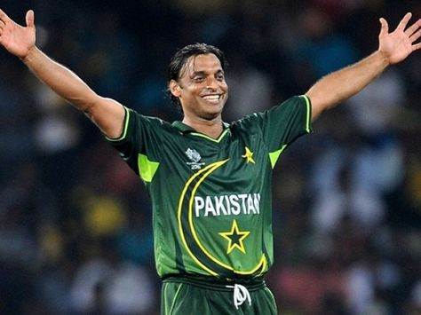

Shoaib Akhter
Shoaib Akhtar, famously known as the "Rawalpindi Express," is a former Pakistani cricketer who is regarded as one of the fastest bowlers in the history of cricket. Born on August 13, 1975, in Rawalpindi, Punjab, Shoaib Akhtar gained fame for his extreme pace, aggressive attitude, and ability to bowl fast yorkers and quick bouncersHe set an official world record by bowling the fastest delivery at 161.3 km/h (100.2 mph) in a match against England, becoming the first bowler to clock a delivery at over 100 miles per hour in an official international match Throughout his career, Shoaib faced controversies and disciplinary issues, including doubts about his bowling action, ball-tampering incidents, legal battles with cricket boards, and confrontations with teammates
Education
Shoaib Akhtar's educational background is not extensively detailed in the provided search results. However, it is mentioned that Shoaib Akhtar participated in a cricket coaching camp held at Pakistan International School in Jeddah, indicating his involvement in cricket-related activities and coaching sessions
Carrier
Akhtar's career spanned across various formats, including Tests, ODIs, T20Is, and the Indian Premier League (IPL), where he played for teams like Kolkata Knight Riders
Awards
Shoaib Akhtar, the former Pakistani cricketer known as the "Rawalpindi Express," has not won a Nobel Prize. While he has had a remarkable cricket career, setting records for his fast bowling and representing various teams in different formats of the game, there is no information or indication in the provided search results that Shoaib Akhtar has received a Nobel Prize or any similar award
Home page